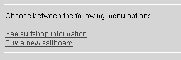
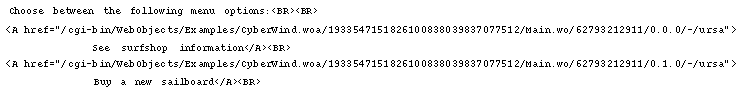
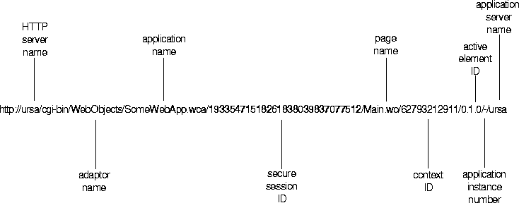
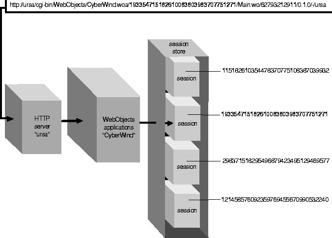

Table of Contents
Table of Contents
 Previous Section
Previous Section
Table of Contents
Previous Section
The page returned to the user may contain hyperlinks, active images, or submit buttons that let the user make some choice about what happens next. For instance, the CyberWind example gives the user the choice of visiting some on-line surf shops or placing an order.

If you view the web browser's source for this HTML page, you'll find that the hyperlinks specify destinations like this:

Clicking a hyperlink has the effect of submitting one of the URLs above. These URLs encode everything the WebObjects application needs to find the appropriate page within the newly established session. More generally, once a session has been established, an HTTP request to a WebObjects application has this format:

Once a session has been established, URLs to the application contain an embedded session identifier, as you see above. Since sessions are designed to protect the data of one user's transactions from that of another, it's important that session IDs cannot be easily predicted or faked. To this end, WebObjects uses randomly generated 32-digit integers as session IDs. (You can override WOSession's sessionID method to implement another security scheme if you'd like.) The URL also specifies the name of the page that should process this request (Main.wo) and provides a context ID to further identify the request-processing page---more on context IDs below.
Using the session ID, the application can retrieve the corresponding session object from the session store, thus maintaining an association between incoming requests and the sessions they belong to:

Next, the session object must locate the page that will process this request. The page name is part of the URL, but the name alone is not enough---this is where the context ID comes in. A context ID is needed to identify a page as it existed at the end of a particular transaction. An example will help clarify the need for a context identifier.
Imagine you're accessing a WebObjects application that lets you subscribe to various publications. You navigate from the site's home page to the order page where you select a publication, and then you go to the customer information page and fill in your address. After submitting this information, you navigate back to the home page. Next, you decide to enter a subscription for a friend. You follow the process a second time, selecting a different publication and entering your friend's address.
At this point, within a single session with the subscriptions application, you've accessed the same pages twice, entering different information each time. Let's say that you now realize that you made a mistake in your own address, so you backtrack to that page, change the address, and resubmit the information. It's important that the new address information is submitted to the customer information page as it existed during the first order so that the revised information can be associated with the right publication order.
WebObjects associates a different context ID (again, a randomly generated integer---to maintain security) with each transaction that occurs between a client browser and the WebObjects application. A request to a session includes both the name of request page and a context ID so the session object can locate, from its cache of page instances, the appropriate one to handle the request.
 Next Section
Next Section